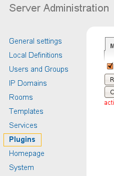
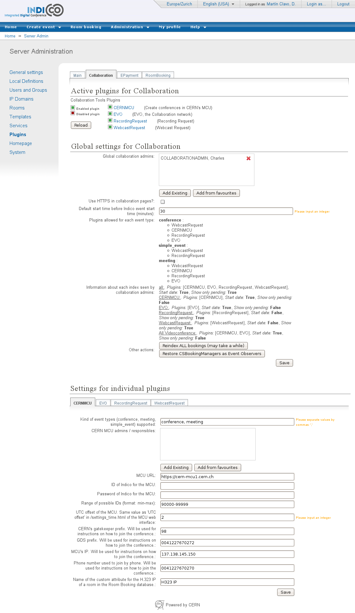

Indico Video Services
User
Guide
Server Administrator

v0.1
Table of Contents
2. Plug-in administration and configuration
2.2.2. Collaboration settings and plug-in settings
2.2.5. Important options and actions
Welcome to the Video Services User Guide for the Indico Server Admin.
As an Indico Server Admin, you have rights to access and modify everything in Indico. Please look at the three following guides:
Guide for the normal Indico user, to see what you can do in Indico events' display pages;
Guide for the Event Manager / Video Services Manager, to see what you can do in the Management Interface of an Indico event;
Guide for the Video Services Administrator, to see what you can do in the Video Services Overview page.
Besides the things mentioned above, there another section of Indico that you will be able to see: the plug-in administration and configuration pages.
Go to the Server Admin pages by clicking on Server admin menu entry in the Administration menu:

Figure 1. Administration Menu
In the left-hand section list, click on Plugins.

Figure 2. Server admin menu. Plugins entry is highlighted
You will arrive to a page with several tabs:
A Main tab, where you can perform actions that affect all plug-in types.
A tab for every plug-in type: examples of plug-in types are: Collaboration (the plug-ins this guide speaks about), Epayment, RoomBooking.
In this tab you can perform actions that affect all plug-in types.

Figure 3. Plugins administration section.
As you know, in Indico's source code, plug-ins are inside the MaKaC/plugins folder. Information about the plug-ins is stored in the database (which plug-ins are currently active, for example), yet if we change the code of the plug-ins, we may need to create new objects in the database. For example, we may need to store an additional option (global value) for the EVO plug-in.
The button Reload All Manually will reload information from all of the plug-ins, regardless of their plug-in type, from their source code files into the DB. When reloading, if some objects are no longer in the source code file, they are still preserved in the DB (although not visible anymore), marked as non present. Also, the values of the objects are preserved. This button is useful when we are adding new objects or changing some of their attributes that do change when reloading.
The button Clear all info in DB is a real reset: all the information about the plug-ins in the DB will be erased, and then loaded again from the source code files. Values are lost and any object that is not in the source code files will also disappear.
Finally, the Reload all plugins every time you open / navigate ... option, if activated, means that every time you navigate through this interface, it will be as if the Reload button is pressed. It's useful to disable it for debugging.
In this tab you can perform actions that affect the Collaboration plug-ins.

Figure 4. Collaboration plugins administration and configuration tab.
The other tabs (Epayment, RoomBooking) have the same structure as this tab, but since this is a Video Services User Guide, we will only go into the details for this tab.
The first part of the page shows you a list of the plug-ins that are in the Indico source code. Exception: plug-ins that have been marked as ignored (ignore = True in their __init__.py file).
You can decide which plug-ins should be active:

Figure 5. Enabled and disabled plugins.
If a plug-in is not active, Indico users will not see anything related to it in any of the Indico pages, be it display, management, or Video Services Overview pages.
To toggle if a plug-in should be active or not, click on its name or the green / red icon.
Also, there is a Reload button on this page. This has the same effect as the Reload All Manually button from the Main tab, except it will only reload information for the Collaboration plug-ins.
After an Indico installation, plug-ins will not be active. This is desirable because you should configure their settings before activating them.
Under the Active plugins section, you can change settings. These are separated into two categories.
Global settings for Collaboration: settings that affect all the plugins.
Settings for individual plugins: settings that only affect one of the plugins.
For the settings of individual plugins, you can browse between plugins by clicking on their tabs (note: this tabs are Javascript-powered, so the page is not reloaded every time):

Figure 6. Subtabs for each of the plugins
There are two kinds of settings: Options and Actions
Options are objects in the database that hold a value. The value can be of many types, and depending on the type of value, what will appear in the page will be different:
String: a simple string value. A text box will be shown.

Figure 7. Example of a string option.
Integer: a simple string value. A text box will be shown, and you will be reminded to input an integer.
List: a list of strings. A text box will be shown, and you will be reminded to separate the strings by commas. You don't need to put quotes (“) around the strings.
Dictionary: a Python-like dictionary, with keys and values. Example of how you should write a dictionary value: {“key1”:”value1”, “key2”:”value2”} . However, most of the time dictionary values are read-only.
Boolean: a checkbox will be shown.
List of users

Figure 8. Example of a list of users option
Use
the Add Existing button to
search for an Indico user in the Database and add it to the list.
You can also use the Add from favourites
button to add a user from your personal favourites. If you want to
remove a user from the list, use the
 button.
button.
List of rooms

Figure 9. Example of a list of rooms option
Use
the Add Room button to add a
room from the list of rooms in Indico's Room Booking database. If
you want to remove a room from the list, use the
button.
Once you edit an option, you need to press the Save button to send the changes to the server. Exception: the options of type User List and Room List, where every time you add or remove a user or room, information is sent to the server.
As you may have noticed in the screenshot of the whole Collaboration tab, some of the options are not actually editable. This means you can see the value but not change it; Actions will change them or you need to change its value in the source code and reload.
If you go to the options.py file of a given plugin folder (or the Collaboration folder, for the global Collaboration options), you will notice that options have several attributes, besides their description, type of value, and the initial value:
editable: if set to True, you will be able to edit them; otherwise, you can only the current value.
visible: if set to False, this option will be in the database like any other option, but you won't be able to see it. It's useful for plugins to store global values that you don't need to see.
mustReload: if set to True, this option's value will be re-set to the value written in the source code file every time you use the Reload button or the Reload All Manually (from the Main tab) button.
Actions are code that can be executed from the settings page. Often, the goal of this code is to update one of the values of the the options. Other times, they can execute some maintenance code.
Actions will appear as buttons that you can press. You will be able to find the executed code in the file actions.py inside the Collaboration folder or inside the folder of the respective.
Here is the meaning of some options and actions that you should know about:
Use HTTPs for Collaboration pages: this option decides if the Video Services section of an event's Management interface should be loaded by HTTP or HTTPs. In this section, Event Managers can create bookings that may have a password; we don't want this password to be transmitted clearly (as in not encrypted) between the user and our Server. However, HTTPs reduces performance, and if your Apache server is not configured properly, HTTPs may not work at all; this is why it is possible to disable this option.
Admins: each plugins has a list of admins; additionally, there is a global collaboration admin list.
Global Collaboration Admins are users who can:
access the Video Services section for any event, and
see the Video Services Overview page (thus, query the index of bookings).
What they can and cannot do is described in the Guide for the Video Services Administrator.
Individual plug-in admins are users who can:
Access the Video Services pages for any event, but only if the plug-in they control is allowed for that particular kind of event (some plug-ins may only be allowed for meetings and not lectures, for example).
see and modify bookings / requests of the plug-in they control.
see the Video Services Overview page, but they can only see indexes for the plugins they control.
Also, for some plug-ins (like RecordingRequest and WebcastRequest), they can optionally receive the notification mails from the requests.
Kind of event types (conference, meeting, simple_event) supported: each plug-in can be configured to be available only for a given type of event.
To change this, write a combination of the words conference, meeting and simple_event (simple_event = lecture in Indico lingo), separated by commas, in the corresponding field.
When you save this option, you will notice that the Plugins allowed for each event type option in the Collaboration global options will update itself. It offers you a summary of the individual Kind of event types supported of each plugin.
Should mail notifications be sent to responsibles? Check this option if you want admins to receive notification mails.
Additional email addresses who will receive notifications (always): list of email addresses, separated by commas, who will receive notifications.
Re-index ALL bookings (action): the indexing mechanism is very complex and even after several tests, it's possible that some inconsistency appears in the index. Pressing this button will erase all the indexes and loop through all of Indico's events and re-index all of the bookings again. This may take a lot of time.